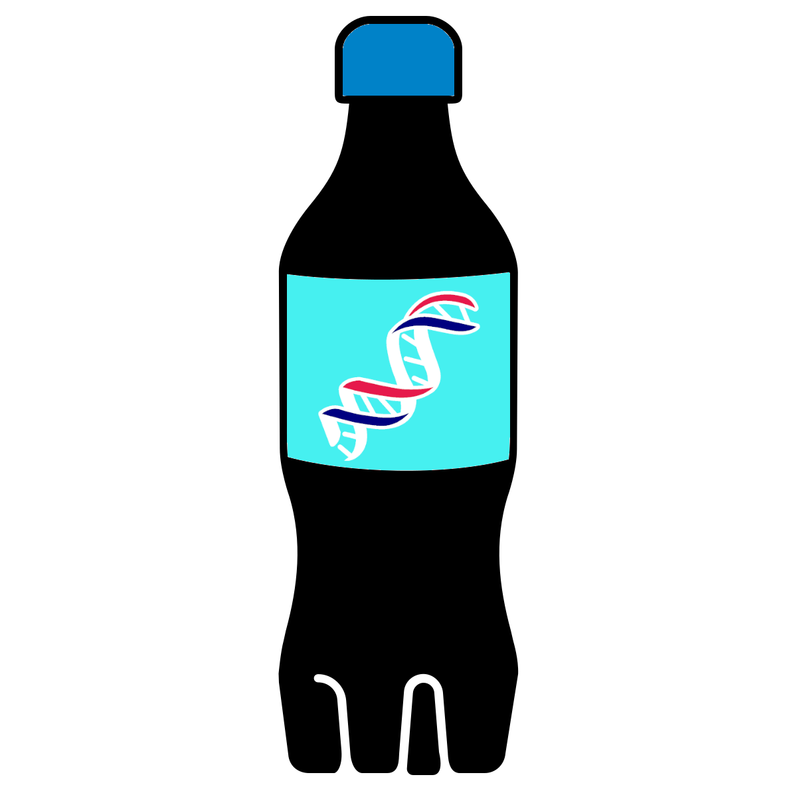

Chapter 8 Calculating population summary statistics using PopGenome
Generating summary statistics of your dataset can be useful to help you get a feel for your data and complement the visual structure plots and PCAs created in the previous chapter.
We will now generate a summary of nucleotide diversity and FST using one scaffold (to save time) from the vcf file we have generated using the package PopGenome in R.
PopGenome is a powerful and flexible R package that can be used to calculate a diverse range of population genetics statistics. We will use only a couple of very basic features and analyses here, but we strongly recommend reading the paper and manual for greater understanding of its capabilities. Advantages of PopGenome include its abilty to:
- Read data in a variety of input formats
- Implement a comprehensive range of population genetics/genomics analyses and statistics
- Read associated annotation files and allow to systematically select regions of interest
- Analyse individual loci, multiple loci, and sliding windows
- Open source and be easily extendable by the scientific community to incorporate new types of analyses
- Integrated with powerful numerical and graphical capabilities
- Platform independent
We will now generate a couple of commonly used population genomic statistics, FST and nucleutide diversity (π).
FST
F statistics are one of the of the most common methods for quantifying genetic differentiation between subpopulations. FST (fixation index) estimates genetic differentiation between subpopulations. It reflects the degree of inbreeding within a subpopulation relative to the total population, as the probability that two alleles drawn at random from a subpopulation are identical by descent. FST is bound between 0 and 1. If FST = 0, there is no genetic differentiation between populations. If FST = 1, the two populations are very strongly separated.
Equation: \[ F _{ST} = \frac{(H_T - H_S)} {H_S} \]
- HT expected heterozygosity of the total population
- HS expected heterozygosity if the subpopulation were in Hardy–Weinberg Equilibrium
π
Nucleotide diversity (π) quantifies the mean divergence between sequences and reflects the extent to which sequences differ from each other. π is the average pairwise difference between all possible pairs of individuals in your sample.
Equation: \[ \pi = \sum f_i f_jp_{ij} \]
- fi and fi frequencies of the _i_th and _j_th haplotypes in the population
- pij sequence divergence between haplotypes
8.1 Getting started

<<<<<<< Updated upstreamNow launch R by typing Rinto the terminal.
Then load the PopGenome package:
We will now load in our SNP data, PopGenome can handle vcf files.
# Load the data
GENOME.class <- readData("/pub14/tea/nsc206/NEOF/popgenomics/data/popgenome/",
format="VCF")This makes a complex object which we can use to extract useful data.
First we can get a summary of the vcf we have imported.
=======In jupyter notebook, create a new notebook called "Chp08-PopGenome".
Create a new markdown cell titled # Summary Statistics using PopGenome
Load the PopGenome package in a new code cell.
library(PopGenome)We will now load in our SNP data, PopGenome can handle vcf files.
# Load the data
GENOME.class <- readData("/pub14/tea/nsc206/NEOF/popgenomics/data/popgenome/",
format="VCF")This makes a complex object which we can use to extract useful data.
First we can get a summary of the vcf we have imported.
# This is complex object, with several slots
get.sum.data(GENOME.class)- n.sites - this is the position of the last SNP in the vcf file - in this case 17,452,779
- n.biallelic.sites - Number of biallelic sites (SNPs) - there are 7,511 biallelic SNPs in this scaffold file - note SNPs are only counted if they have a 'PASS' description in the filter column (you can get the full number of SNPs in the vcf by typing
GENOME.class@n.sites2) - n.gaps - Number of gaps observed in the data - 0
- n.unknowns - Number of unknown positions - 778 this corresponds to the number of SNPs without the 'PASS' description in the filter column
- n.valid.sites - Number of sites without gaps (number reported as NA for vcf files)
- n.polyallelic.sites - Number of sites with more than two variants - 0
- trans.transv.ratio - Transition (changes from A ↔︎ G and C ↔︎ T) - transversion (changes from A ↔︎ C, A ↔︎T, G ↔︎ C or G ↔︎ T) ratio
The object GENOME.class contains all the information of the different data that you can import and assign to the vcf and the statistics that can be run. To get a summary type:
These slots can be accessed by using the “@” sign. For example the number of sites:
For more information on the slots available using PopGenome please refer to the manual
We can now assign population information to the object. This is needed to calculate FST and π. For now we will specify just two of the populations.
# Make a list of individuals for each population
# Note: the sample names in the vcf contain the path and the .bam file extension
# Here we are just making a list of sample names as they appear in the vcf -
# we are not importing any additional files
pop1<-c("./aligned/SRR8861576_paired.bam","./aligned/SRR8861581_paired.bam",
"./aligned/SRR8861586_paired.bam","/aligned/SRR8861592_paired.bam")
pop2<-c("./aligned/SRR8861578_paired.bam","./aligned/SRR8861583_paired.bam",
"./aligned/SRR8861589_paired.bam","./aligned/SRR8861591_paired.bam")
# Set populations
GENOME.class <- set.populations(GENOME.class, list(pop1,pop2))
# check if setting the populations worked
GENOME.class@populations # You can see that the sample names have been assigned to
#two different within @populationsSince the calculation of certain population genetic parameters can be computationally intensive, they have to be executed separately beforehand. For this modules have to be run. To calculate FST and π we can use the F_st.stats module.
# Perform the calculations and add the results to the appropriate slots
GENOME.class <- F_ST.stats(GENOME.class)
# Print FST
GENOME.class@nucleotide.F_ST # Fst is very low between these two populations
# Print nucleotide diversity along the scaffold and average nucleotide diversity per site
GENOME.class@Pi
GENOME.class@Pi/GENOME.class@n.sites2The object GENOME.class contains all the information of the different data that you can import and assign to the vcf and the statistics that can be run. To get a summary, type:
show.slots(GENOME.class)These slots can be accessed by using the "@" sign. For example the number of sites:
GENOME.class@n.sitesFor more information on the slots available using PopGenome please refer to the manual
We can now assign population information to the object. This is needed to calculate FST and π. For now we will specify just two of the populations.
# Make a list of individuals for each population
# Note: the sample names in the vcf contain the path and the .bam file extension
# Here we are just making a list of sample names as they appear in the vcf -
# we are not importing any additional files
pop1<-c("./aligned/SRR8861576_paired.bam","./aligned/SRR8861581_paired.bam",
"./aligned/SRR8861586_paired.bam","/aligned/SRR8861592_paired.bam")
pop2<-c("./aligned/SRR8861578_paired.bam","./aligned/SRR8861583_paired.bam",
"./aligned/SRR8861589_paired.bam","./aligned/SRR8861591_paired.bam")
# Set populations
GENOME.class <- set.populations(GENOME.class, list(pop1,pop2))
# check if setting the populations worked
GENOME.class@populations # You can see that the sample names have been assigned to
#two different within @populationsSince the calculation of certain population genetic parameters can be computationally intensive, they have to be executed separately beforehand. For this, modules have to be run. To calculate FST and π we can use the F_st.stats module.
# Perform the calculations and add the results to the appropriate slots
GENOME.class <- F_ST.stats(GENOME.class)
# Print FST
GENOME.class@nucleotide.F_ST # Fst is very low between these two populations
# Print nucleotide diversity along the scaffold and average nucleotide diversity per site
GENOME.class@Pi
GENOME.class@Pi/GENOME.class@n.sites2This can give you a quick feel for your dataset but in reality diversity will vary throughout the genome. It is often more appropriate and interesting to examine how different regions of the genome have diverged between populations. We will explore one method for estimating differentiation between a pair of populations in the next chapter.